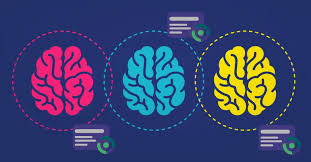

Existen dos tipos principales de IA: IA débil y IA fuerte. La IA débil se centra en realizar tareas específicas, como los asistentes virtuales o los sistemas de recomendación. Por otro lado, la IA fuerte tiene la capacidad de realizar cualquier tarea cognitiva humana, con un nivel de inteligencia general comparable al de un ser humano. Aunque la IA fuerte aún no ha sido alcanzada, los avances en IA débil siguen siendo significativos.